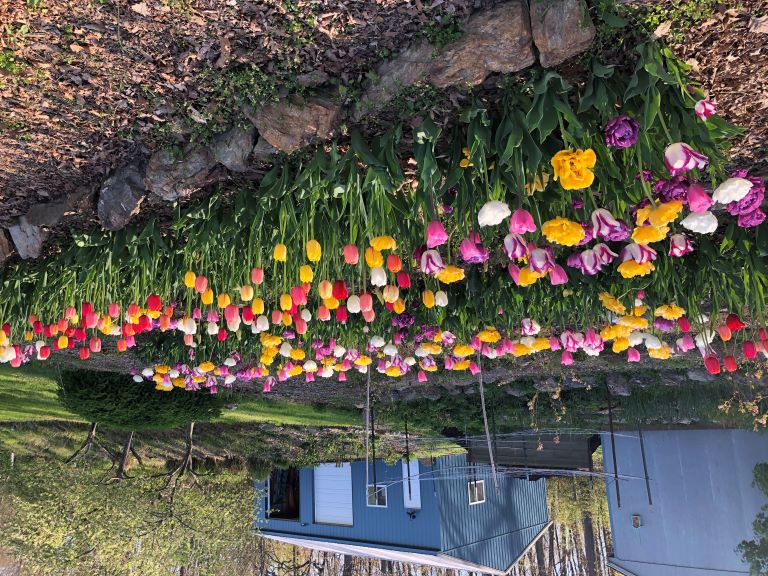
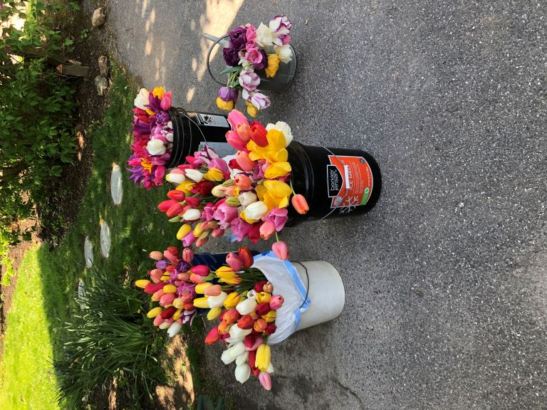
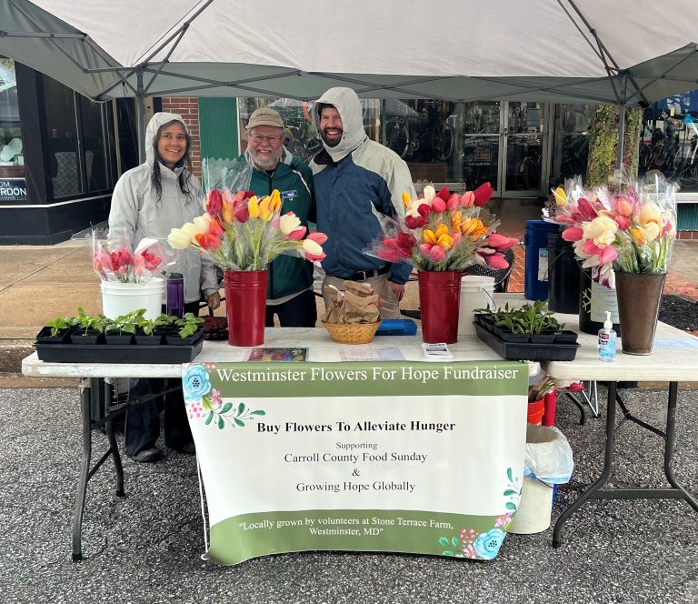
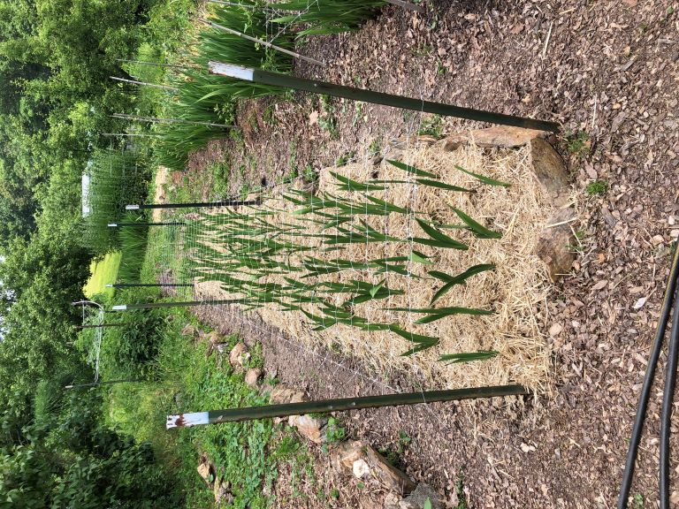

Fall 2021:
We have started a small pilot project in partnership with Growing Hope Gobally (GHG). The high level concept is we grow some product here in our gardens that can be marketed to convert it to cash which is then donated to GHG which partners with local organizations in the developing world to support sustainable solutions to hunger. Read more about GHG here Growing Hope Globally.
Since in the developed world we will happily pay more money for flowers than food because we take our inexpensive food supply for granted, the pilot project will grow flowers to sell to provide money for resources to people who need to grow food.
Fall of 2021 we planted 900 late flowering Tulips that can be marketed at area events in May 2022, and then in Spring 2022, we will plant 1000 Gladiolus in several staggered plantings for marketing at events from July through September 2022.
Our goal is to produce at least $1000 net profit to donate to GHG, with 25% going to a local food pantry Carroll County Food Sunday (CCFS). Thinking and acting locally and globally.
You can reserve some bouquets by using this pre-order form here.
[Hide Pre-Order Form] [Show Pre-Order Form]Fall 2022 Update:
We learned a great deal about both the production aspects and marketing and sales challenges of our project and had modest success in executing our plan, netting about $500 in profit for our target charities, half of our original goal. After much discussion we also decided to split the proceeds evenly between GHG and CCFS to make our sales efforts more appealing locally.
Two of the tulip beds ready for cutting early May 2022
Tulips ready for market
Tulip sales team at Westminster Flower and Jazz Festival
Gladiolus support structure installed to insure straight stems for marketing.
